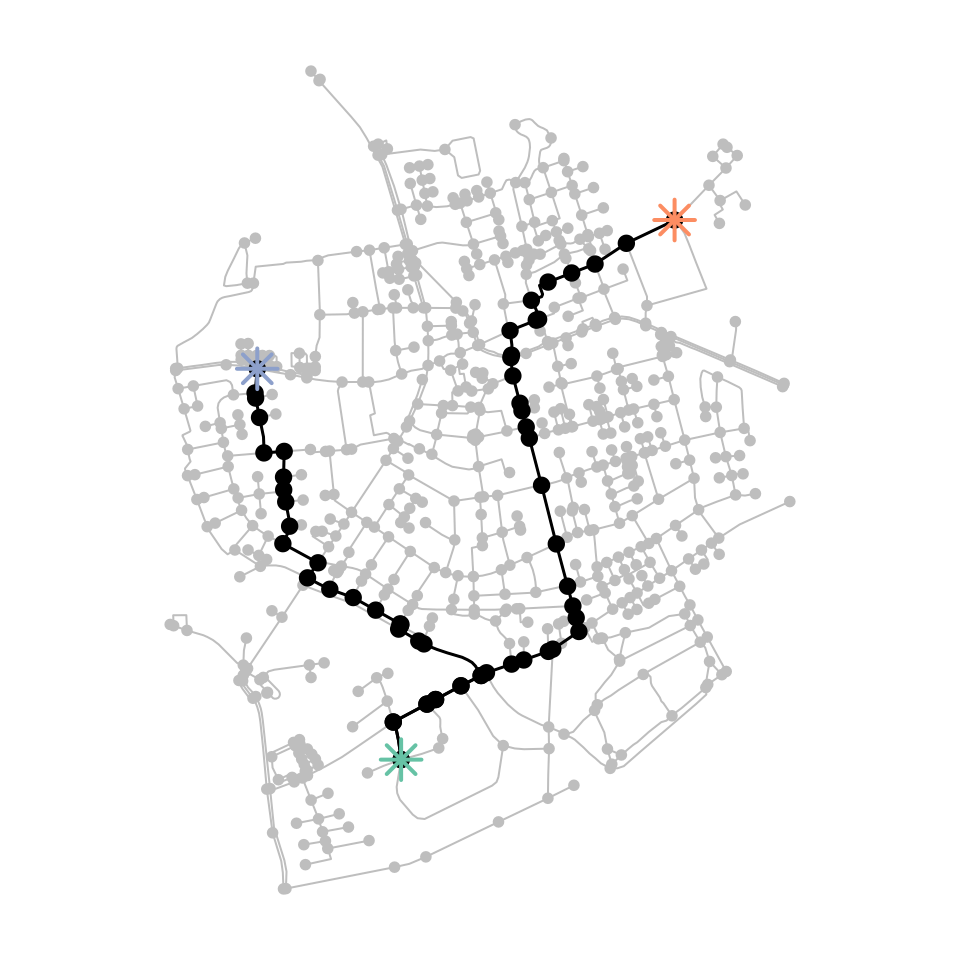
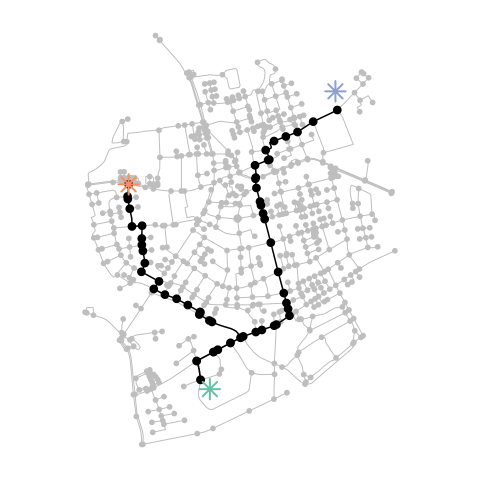
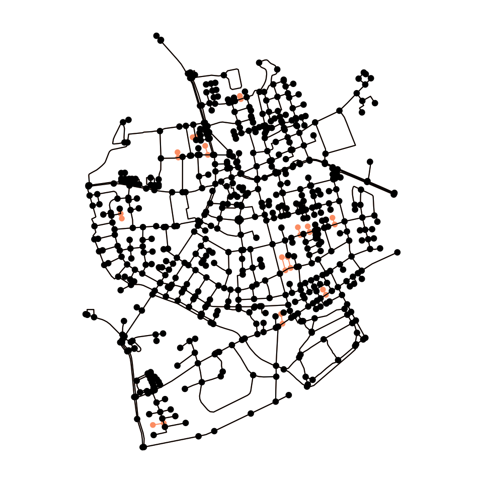
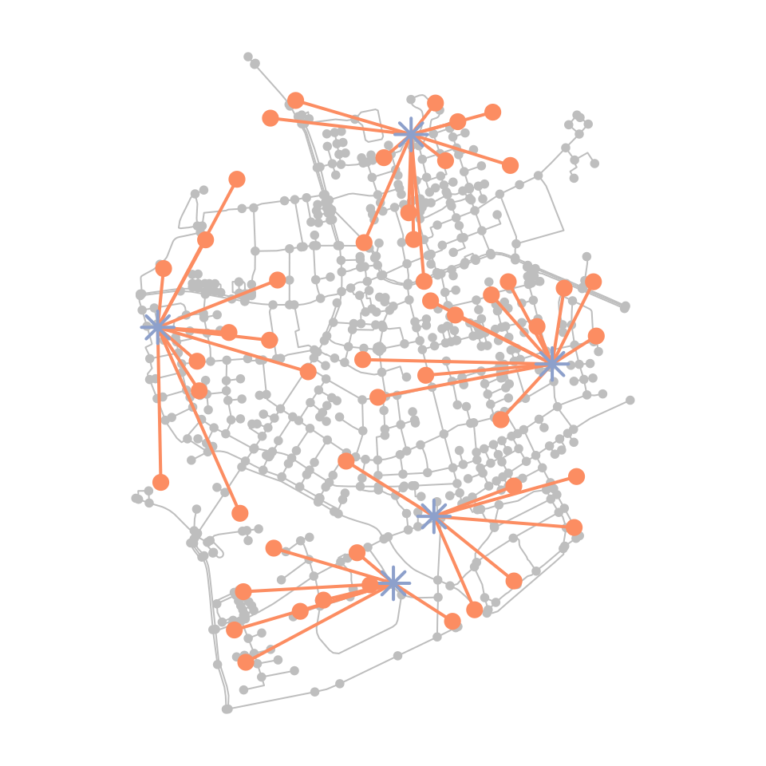
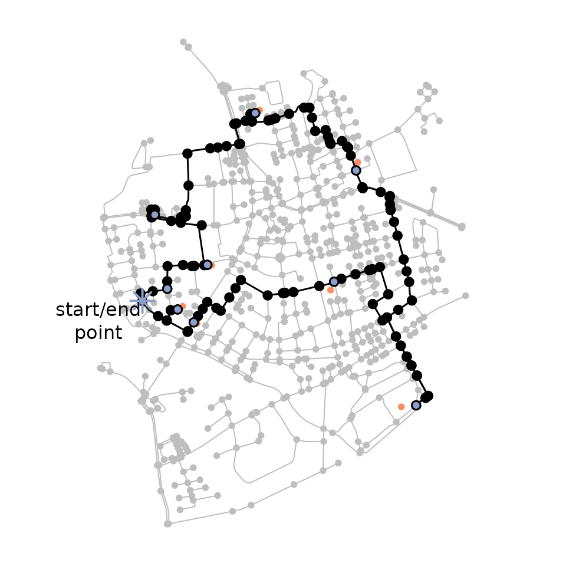
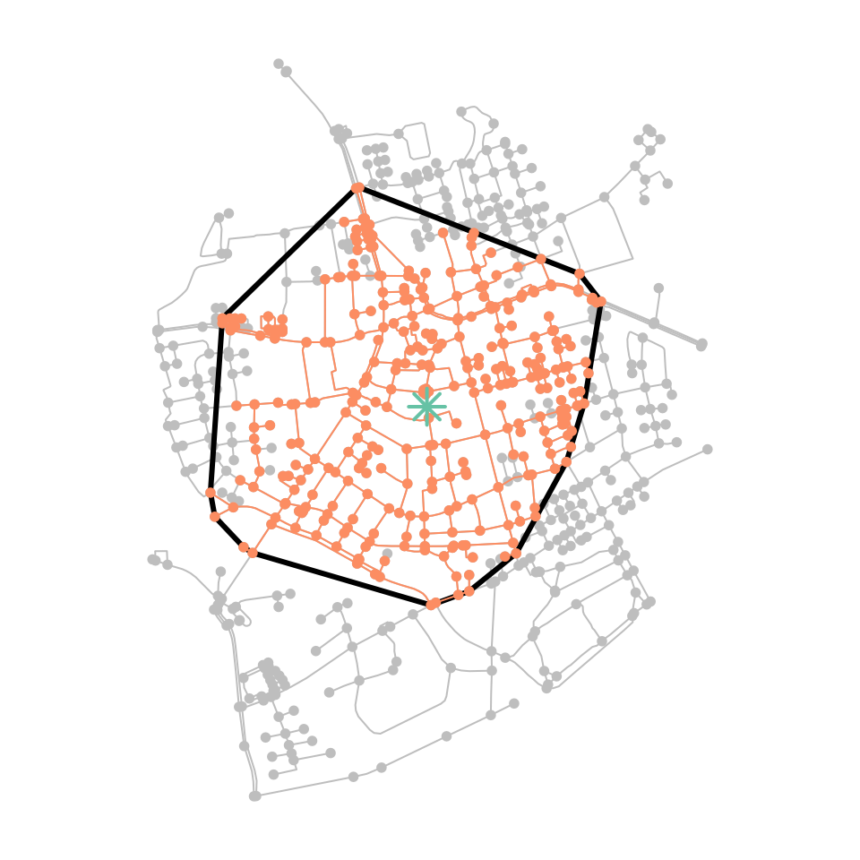

Calculating shortest paths between pairs of nodes is a core task in network analysis. The sfnetworks package offers wrappers around the path calculation functions of igraph, making it easier to use them when working with spatial data and tidyverse packages. This vignette demonstrates their functionality.
In this regard it is important to remember that sfnetworks is a general-purpose package for spatial network analysis, not specifically optimized for a single task. If your only purpose is many-to-many routing in large networks, there might be other approaches that are faster and fit better to your needs. For example, the dodgr package was designed for many-to-many routing on large dual-weighted graphs, with its main focus on OpenStreetMap road network data. The cppRouting package contains functions to calculate shortest paths and isochrones/isodistances on weighted graphs. When working with OpenStreetMap data, it is also possible to use the interfaces to external routing engines such as graphhopper, osrm and opentripplanner. The stplanr package for sustainable transport planning lets you use many routing engines from a single interface, through stplanr::route(), including routing using local R objects. Of course, all these packages can be happily used alongside sfnetworks.
Setting edge weights
The route of the shortest path between two nodes in a network is influenced by the weights or impedance of the edges. If you don’t provide these weights explicitly, shortest paths calculation functions in sfnetworks proceed as follows:
- If there is a column in the edges table named weight, the values in this column are automatically used as edge weights. These values are meant to be numeric. If they are not,
igraphwill silently try to convert them withas.numeric(). - If there is no weight column,
st_network_paths()internally calculates the geographic lengths of the edges and uses those as weights.
Every function that is about the calculation of shortest paths also accepts a weights argument which allows you to provide edge weights explicitly. In sfnetworks, this argument can be a numeric vector of the same length as the number of edges in the network, but also the name of a column in the edges table. The weights argument will always overrule the default behavior of using the weight column for edge weights. If you have a weight column but want to calculate paths without using weights, set weights = NA. In practice that means that the weight of all edges is equal to 1. Hence, the shortest path between node A and node B is the path with the fewest number of edges.
The edge_length() function can be used to calculate the length of each edge in geographic space, such that you can use those as weights in shortest paths calculations. The function is meant to be used inside a dplyr::mutate() verb, as follows:
net = as_sfnetwork(roxel, directed = FALSE) %>%
st_transform(3035) %>%
activate("edges") %>%
mutate(weight = edge_length())
net#> # A sfnetwork with 701 nodes and 851 edges
#> #
#> # CRS: EPSG:3035
#> #
#> # An undirected multigraph with 14 components with spatially explicit edges
#> #
#> # Edge Data: 851 × 6 (active)
#> # Geometry type: LINESTRING
#> # Dimension: XY
#> # Bounding box: xmin: 4150707 ymin: 3206375 xmax: 4152367 ymax: 3208565
#> from to name type geometry weight
#> <int> <int> <chr> <fct> <LINESTRING [m]> [m]
#> 1 1 2 Havixbecker Strasse residential (4151491 3207923, 415147… 28.9
#> 2 3 4 Pienersallee secondary (4151398 3207777, 415139… 108.
#> 3 5 6 Schulte-Bernd-Strasse residential (4151408 3207539, 415141… 54.4
#> 4 7 8 NA path (4151885 3206698, 415186… 155.
#> 5 9 10 Welsingheide residential (4151732 3207017, 415172… 209.
#> 6 11 12 NA footway (4152152 3206984, 415214… 63.0
#> # … with 845 more rows
#> #
#> # Node Data: 701 × 1
#> # Geometry type: POINT
#> # Dimension: XY
#> # Bounding box: xmin: 4150707 ymin: 3206375 xmax: 4152367 ymax: 3208565
#> geometry
#> <POINT [m]>
#> 1 (4151491 3207923)
#> 2 (4151474 3207946)
#> 3 (4151398 3207777)
#> # … with 698 more rows
It is important to mention that tidygraph does not always comply with the default igraph behaviors as we described them above. For example, when using tidygraphs centrality functions, you have to explicity set weights = weight when you want to use your weight column as edge weights in the centrality calculation. If the weights argument is not set (i.e. weights = NULL) it will not use any edge weights.
Calculating shortest paths
The function st_network_paths() is a wrapper around the igraph function igraph::shortest_paths(). There are three main differences:
- Besides node indices and node names,
st_network_paths()gives the additional option to provide any (set of) geospatial point(s) as from and to location(s) of the shortest paths, either as sf or sfc object. Provided points that do not equal any node in the network will be snapped to their nearest node before calculating the paths. - To allow smooth integration with the tidyverse, the output of
st_network_paths()is a tibble, with one row per returned path. The column node_paths contains the ordered list of node indices in the path, and the column edge_paths contains the ordered list of edge indices in the path. - Whenever there is no column in the edges table named weight and the
weightsargument is not set (i.e.weights = NULL),st_network_paths()by default uses the geographic edge length as weight.
Just as igraph::shortest_paths(), the st_network_paths() function is meant for one-to-one and one-to-many routing. Hence, it is only possible to provide a single from location, while the to locations can be more than one.
Lets start with the most basic example of providing node indices as from and to locations. Remember that a node index in a sfnetwork refers to the position of the node in the nodes table of the network (i.e. its row number). There is also the possibility to use character encoded node names instead of numeric node indices. This requires the nodes table to have a column name with a unique name for each node.
Since we have created a weight column in the previous section, these weights (i.e. the length of the edge geometries) will be used automatically in the shortest paths calculation. In weighted networks, igraph::shortest_paths() applies the Dijkstra algorithm to find the shortest paths. In the case of unweighted networks, it uses breadth-first search instead.
paths = st_network_paths(net, from = 495, to = c(458, 121))
paths#> # A tibble: 2 × 2
#> node_paths edge_paths
#> <list> <list>
#> 1 <int [29]> <int [28]>
#> 2 <int [33]> <int [32]>
paths %>%
slice(1) %>%
pull(node_paths) %>%
unlist()
#> [1] 495 485 244 402 166 18 195 181 68 100 169 170 182 101 103 547 546 554 556
#> [20] 555 86 61 88 531 543 90 229 527 458
paths %>%
slice(1) %>%
pull(edge_paths) %>%
unlist()
#> [1] 311 757 670 671 93 117 116 106 54 96 97 502 501 414 413 402 791 423 422
#> [20] 788 392 393 394 779 395 540 539 357
plot_path = function(node_path) {
net %>%
activate("nodes") %>%
slice(node_path) %>%
plot(cex = 1.5, lwd = 1.5, add = TRUE)
}
colors = sf.colors(3, categorical = TRUE)
plot(net, col = "grey")
paths %>%
pull(node_paths) %>%
walk(plot_path)
net %>%
activate("nodes") %>%
st_as_sf() %>%
slice(c(495, 121, 458)) %>%
plot(col = colors, pch = 8, cex = 2, lwd = 2, add = TRUE)
Next we will create some geospatial points that do not intersect with any node in the network. Providing them to st_network_paths() will first find the nearest node to each of them, and then calculate the shortest paths accordingly.
p1 = st_geometry(net, "nodes")[495] + st_sfc(st_point(c(50, -50)))
st_crs(p1) = st_crs(net)
p2 = st_geometry(net, "nodes")[458]
p3 = st_geometry(net, "nodes")[121] + st_sfc(st_point(c(-10, 100)))
st_crs(p3) = st_crs(net)
paths = st_network_paths(net, from = p1, to = c(p2, p3))
plot(net, col = "grey")
paths %>%
pull(node_paths) %>%
walk(plot_path)
plot(c(p1, p2, p3), col = colors, pch = 8, cex = 2, lwd = 2, add = TRUE)
Simply finding the nearest node to given points is not always the best way to go. For example: when a provided point is close to a location on an edge linestring, but relatively far from any node, it gives better results when the routing does not start at its nearest node, but at that nearby location on the edge linestring. To accommodate this, you can first blend your input points into the network, and then proceed as normal. Blending is the name we gave to the combined process of snapping a point to its nearest point on its nearest edge, splitting the edge there, and adding the snapped point as node to the network. It is implement in the function st_network_blend(). See the vignette on spatial joins and filters for more details.
Another issue may arise wen your network consists of multiple components that are not connected to each other. In that case, it is possible that the nearest node to a provided point is located in a tiny component and only a few other nodes can be reached from it. In such cases it might be good to first reduce the network to its largest (or n largest) component(s) before calculating shortest paths. The tidygraph function tidygraph::group_components() can help with this. It assigns an integer to each node identifying the component it is in, with 1 being the largest component in the network, 2 the second largest, and so on.
# Our network consists of several unconnected components.
with_graph(net, graph_component_count())
#> [1] 14
connected_net = net %>%
activate("nodes") %>%
filter(group_components() == 1)
plot(net, col = colors[2])
plot(connected_net, cex = 1.1, lwd = 1.1, add = TRUE)
Another way to calculate shortest paths, which fits nicely in the tidygraph style of working, is by using the to_spatial_shortest_paths() morpher function. This will subset the original network to only contain those nodes and edges that appear in a shortest path between two nodes. See the vignette on Spatial morphers for details.
Retrieving an OD cost matrix
The shortest paths calculation as described above is only supported for one-to-one and one-to-many routing. The alternative for many-to-many routing is the calculation of an origin-destination cost matrix. Instead of providing the individual paths, it returns a matrix in which entry \(i,j\) is the total cost (i.e. sum of weights) of the shortest path from node \(i\) to node \(j\). The origin-destination cost matrix is usually an important starting point for further analysis. For example, it can serve as input to route optimization algorithms, spatial clustering algorithms and the calculation of statistical measures based on spatial proximity.
The igraph function for this purpose is igraph::distances(), which in sfnetworks is wrapped by st_network_cost(), allowing again to provide sets of geospatial points as from and to locations. Note that the calculated costs refer to the paths between the nearest nodes of the input points. Their units are the same as the units of weights used in the calculation, in this case meters.
st_network_cost(net, from = c(p1, p2, p3), to = c(p1, p2, p3))
#> [,1] [,2] [,3]
#> [1,] 0.000 1614.252 2094.555
#> [2,] 1614.252 0.000 1315.965
#> [3,] 2094.555 1315.965 0.000If we don’t provide any from and to points, st_network_cost() will by default calculate the cost matrix for the entire network.
# Our network has 701 nodes.
with_graph(net, graph_order())
#> [1] 701
cost_matrix = st_network_cost(net)
dim(cost_matrix)
#> [1] 701 701All ... arguments are forwarded internally to igraph::distances(). Among other options, this means that you can define which algorithm is used for the paths calculation. By default, igraph will choose the most suitable algorithm based on characteristics of the request, such as the type of weights (e.g. only positive or also negative) and the number of given from locations. For details, see the igraph documentation.
In directed networks, it also gives you the possibility to define if you want to allow travel only over outbound edges (by setting mode = "out"), only over inbound edges (by setting mode = "in"), or both (by setting mode = "all", i.e. assume an undirected network). It is important to note that even in directed networks the latter is the default!
Applications
In this section, we will show a small set of applications of the routing related functions. It is definitely not meant to be an overview that covers everything! Also, remember again that sfnetworks is a general-purpose spatial network analysis package not optimized for a specific application. However, especially in combination with other packages it can address a wide variety of use-cases.
Closest facility analysis
The purpose of closest facility analysis is, given a set of destination locations (also referred to as the facilities) and origin locations (also referred to as the sites), to find the closest n facilities to each site. For example, you might want to find the nearest transit hub for each address in a city, or the nearest hospital to high-risk road intersections.
To solve this problem, you can calculate the OD cost matrix with the sites as from points, and the facilities as to points. Then, for each row (i.e. each site) you find the column(s) with the lowest cost value.
# Select a random set of sites and facilities.
# We select random locations within the bounding box of the nodes.
set.seed(128)
hull = net %>%
activate("nodes") %>%
st_geometry() %>%
st_combine() %>%
st_convex_hull()
sites = st_sample(hull, 50, type = "random")
facilities = st_sample(hull, 5, type = "random")
# Blend the sites and facilities into the network to get better results.
# Also select only the largest connected component.
new_net = net %>%
activate("nodes") %>%
filter(group_components() == 1) %>%
st_network_blend(c(sites, facilities))
#> Warning: st_network_blend assumes attributes are constant over geometries
# Calculate the cost matrix.
# By default the weight column is used for edge weights.
# In our case this column contains the geographic lengths of the edges.
cost_matrix = st_network_cost(new_net, from = sites, to = facilities)
# Find for each site which facility is closest.
closest = facilities[apply(cost_matrix, 1, function(x) which(x == min(x))[1])]
# Create a line between each site and its closest facility, for visualization.
draw_lines = function(sources, targets) {
lines = mapply(
function(a, b) st_sfc(st_cast(c(a, b), "LINESTRING"), crs = st_crs(net)),
sources,
targets,
SIMPLIFY = FALSE
)
do.call("c", lines)
}
connections = draw_lines(sites, closest)
# Plot the results.
plot(new_net, col = "grey")
plot(connections, col = colors[2], lwd = 2, add = TRUE)
plot(facilities, pch = 8, cex = 2, lwd = 2, col = colors[3], add = TRUE)
plot(sites, pch = 20, cex = 2, col = colors[2], add = TRUE)
Route optimization
The traveling salesman problem aims to find the shortest tour that visits a set of locations exactly once and then returns to the starting location. In sfnetworks, there are no dedicated functions to solve this. However, we can bring in other packages here to assist us. Probably the best known R package for solving traveling salesman problems is TSP. To do so, it requires a matrix that specifies the travel cost between each pair of locations. As shown above, we can use sfnetworks to calculate such a cost matrix for our network.
Lets first generate a set of random points within the bounding box of the network. These will serve as the locations the traveling salesman has to visit.
We can then compute the cost matrix using st_network_cost(). Internally, it will first snap the provided points to their nearest node in the network, and then use the weight column to calculate the travel costs between these nodes. Passing the matrix to TSP::TSP() will make it suitable for usage inside the TSP package.
net = activate(net, "nodes")
cost_matrix = st_network_cost(net, from = rdm, to = rdm)
# Use nearest node indices as row and column names.
rdm_idxs = st_nearest_feature(rdm, net)
row.names(cost_matrix) = rdm_idxs
colnames(cost_matrix) = rdm_idxs
round(cost_matrix, 0)
#> 252 545 698 15 224 323 31 510 71 61
#> 252 0 914 1335 1947 1010 1122 776 1052 1365 1204
#> 545 914 0 421 1575 503 358 962 680 451 291
#> 698 1335 421 0 1552 590 241 1383 1031 227 130
#> 15 1947 1575 1552 0 2046 1408 1314 1015 1616 1620
#> 224 1010 503 590 2046 0 767 1155 1151 551 459
#> 323 1122 358 241 1408 767 0 1170 800 304 308
#> 31 776 962 1383 1314 1155 1170 0 796 1413 1252
#> 510 1052 680 1031 1015 1151 800 796 0 1094 970
#> 71 1365 451 227 1616 551 304 1413 1094 0 161
#> 61 1204 291 130 1620 459 308 1252 970 161 0By passing the cost matrix to the solver TSP::solve_TSP() we obtain an object of class TOUR. This object contains a named vector specifying the indices of the provided locations in the optimal order of visit.
tour = solve_TSP(TSP(cost_matrix))
tour_idxs = as.numeric(names(tour))
tour_idxs
#> [1] 71 61 545 224 252 31 15 510 323 698
# Approximate length of the route.
# In meters, since that was the unit of our cost values.
round(tour_length(tour), 0)
#> [1] 6337Knowing the optimal order to visit all provided locations, we move back to sfnetworks to match this route to the network. We do so by computing the shortest paths between each location and its subsequent one, until we reach the starting point again.
For more details on solving travelling salesman problems in R, see the TSP package documentation.
# Define the nodes to calculate the shortest paths from.
# Define the nodes to calculate the shortest paths to.
# All based on the calculated order of visit.
from_idxs = tour_idxs
to_idxs = c(tour_idxs[2:length(tour_idxs)], tour_idxs[1])
# Calculate the specified paths.
tsp_paths = mapply(st_network_paths,
from = from_idxs,
to = to_idxs,
MoreArgs = list(x = net)
)["node_paths", ] %>%
unlist(recursive = FALSE)
# Plot the results.
plot(net, col = "grey")
plot(rdm, pch = 20, col = colors[2], add = TRUE)
walk(tsp_paths, plot_path) # Reuse the plot_path function defined earlier.
plot(
st_as_sf(slice(net, rdm_idxs)),
pch = 20, col = colors[3], add = TRUE
)
plot(
st_as_sf(slice(net, tour_idxs[1])),
pch = 8, cex = 2, lwd = 2, col = colors[3], add = TRUE
)
text(
st_coordinates(st_as_sf(slice(net, tour_idxs[1]))) - c(200, 90),
labels = "start/end\npoint"
)
Isochrones and isodistances
With respect to a given point \(p\) and a given travel time \(t\), an isochrone is the line for which it holds that the travel time from any point on the line to or from \(p\) is equal to \(t\). When using distances instead of time, it is called an isodistance.
In sfnetworks there are no dedicated, optimized functions for calculating isochrones or isodistances. However, we can roughly approximate them by using a combination of sf and tidygraph functions. Lets first calculate imaginary travel times for each edge, using randomly generated average walking speeds for each type of edge.
# How many edge types are there?
types = net %>%
activate("edges") %>%
pull(type) %>%
unique()
types
#> [1] residential secondary path footway track
#> [6] unclassified pedestrian service cycleway
#> 9 Levels: cycleway footway path pedestrian residential secondary ... unclassified
# Randomly define a walking speed in m/s for each type.
# With values between 3 and 7 km/hr.
set.seed(1)
speeds = runif(length(types), 3 * 1000 / 60 / 60, 7 * 1000 / 60 / 60)
# Assign a speed to each edge based on its type.
# Calculate travel time for each edge based on that.
net = net %>%
activate("edges") %>%
group_by(type) %>%
mutate(speed = units::set_units(speeds[cur_group_id()], "m/s")) %>%
mutate(time = weight / speed) %>%
ungroup()
net#> # A sfnetwork with 701 nodes and 851 edges
#> #
#> # CRS: EPSG:3035
#> #
#> # An undirected multigraph with 14 components with spatially explicit edges
#> #
#> # Edge Data: 851 × 8 (active)
#> # Geometry type: LINESTRING
#> # Dimension: XY
#> # Bounding box: xmin: 4150707 ymin: 3206375 xmax: 4152367 ymax: 3208565
#> from to name type geometry weight speed time
#> <int> <int> <chr> <fct> <LINESTRING [m]> [m] [m/s] [s]
#> 1 1 2 Havixbe… resi… (4151491 3207923, 4151474 32079… 28.9 1.06 27.3
#> 2 3 4 Pieners… seco… (4151398 3207777, 4151390 32077… 108. 1.83 58.8
#> 3 5 6 Schulte… resi… (4151408 3207539, 4151417 32075… 54.4 1.06 51.4
#> 4 7 8 NA path (4151885 3206698, 4151861 32067… 155. 1.47 106.
#> 5 9 10 Welsing… resi… (4151732 3207017, 4151721 32068… 209. 1.06 197.
#> 6 11 12 NA foot… (4152152 3206984, 4152143 32069… 63.0 1.25 50.6
#> # … with 845 more rows
#> #
#> # Node Data: 701 × 1
#> # Geometry type: POINT
#> # Dimension: XY
#> # Bounding box: xmin: 4150707 ymin: 3206375 xmax: 4152367 ymax: 3208565
#> geometry
#> <POINT [m]>
#> 1 (4151491 3207923)
#> 2 (4151474 3207946)
#> 3 (4151398 3207777)
#> # … with 698 more rows
Now, we can calculate the total travel time for each shortest path between the (nearest node of the) origin point and all other nodes in the network, using the node measure function tidygraph::node_distance_from() with the values in the time column as weights. Then, we filter the nodes reachable within a given travel time from the origin. By drawing a convex hull around these selected nodes we roughly approximate the isochrone. If we wanted isochrones for travel times towards the central point, we could have used the node measure function tidygraph::node_distance_to() instead.
net = activate(net, "nodes")
p = net %>%
st_geometry() %>%
st_combine() %>%
st_centroid()
iso = net %>%
filter(node_distance_from(st_nearest_feature(p, net), weights = time) <= 600)
iso_poly = iso %>%
st_geometry() %>%
st_combine() %>%
st_convex_hull()
plot(net, col = "grey")
plot(iso_poly, col = NA, border = "black", lwd = 3, add = TRUE)
plot(iso, col = colors[2], add = TRUE)
plot(p, col = colors[1], pch = 8, cex = 2, lwd = 2, add = TRUE)
The workflow presented above is generalized in a spatial morpher function to_spatial_neighborhood(), which can be used inside the tidygraph::convert() verb to filter only those nodes that can be reached within a given travel cost from the given origin node. See the vignette on Spatial morphers for details.
Custom routing
In many cases the shortest path based geographical distances or travel time is not necessarily the optimal path. The most appropriate route may depend on many factors, for example staying away from large and potentially unpleasant highways for motor traffic. All networks have different characteristics. In OpenStreetMap networks the ‘highway’ type is often a good (albeit crude) approximation of the network. The roxel demo dataset is derived from OpenStreetMap and represents a largely residential network:
table(roxel$type)
#>
#> cycleway footway path pedestrian residential secondary
#> 42 67 95 1 394 62
#> service track unclassified
#> 160 5 25Building on the shortest paths calculated in a previous section we can try an alternative routing profile. Let’s take a look at these paths to see what type of ways they travel on:
paths_sf = net %>%
activate("edges") %>%
slice(unlist(paths$edge_paths)) %>%
st_as_sf()
table(paths_sf$type)
#>
#> cycleway footway path pedestrian residential secondary
#> 2 0 6 0 38 1
#> service track unclassified
#> 2 0 6
plot(paths_sf["type"], lwd = 4, key.pos = 4, key.width = lcm(4))
As with the overall network, the paths we calculated are dominated by residential streets. For the purposes of illustration, lets imagine we’re routing for a vehicle that we want to keep away from residential roads, and which has a much lower cost per unit distance on secondary roads:
weighting_profile = c(
cycleway = Inf,
footway = Inf,
path = Inf,
pedestrian = Inf,
residential = 3,
secondary = 1,
service = 1,
track = 10,
unclassified = 1
)
weighted_net = net %>%
activate("edges") %>%
mutate(multiplier = weighting_profile[type]) %>%
mutate(weight = edge_length() * multiplier)We can now recalculate the routes. The result show routes that avoid residential networks.
weighted_paths = st_network_paths(weighted_net, from = 495, to = c(458, 121))
weighted_paths_sf = weighted_net %>%
activate("edges") %>%
slice(unlist(weighted_paths$edge_paths)) %>%
st_as_sf()
table(weighted_paths_sf$type)
#>
#> cycleway footway path pedestrian residential secondary
#> 0 0 0 0 9 43
#> service track unclassified
#> 3 0 0
plot(st_as_sf(net, "edges")["type"], lwd = 4,
key.pos = NULL, reset = FALSE, main = "Distance weights")
plot(st_geometry(paths_sf), add = TRUE)
plot(st_as_sf(net, "edges")["type"], lwd = 4,
key.pos = NULL, reset = FALSE, main = "Custom weights")
plot(st_geometry(weighted_paths_sf), add = TRUE)

Note that developing more sophisticated routing profiles is beyond the scope of this package. If you need complex mode-specific routing profiles, we recommend looking at routing profiles associated with open source routing engines, such as bike.lua in the OSRM project. Another direction of travel could be to extend on the approach illustrated here, but this work could be well-suited to a separate package that builds on sfnetworks (remembering that sophisticated routing profiles account for nodes and edges). If you’d like to work on such a project to improve mode-specific routing in R by building on this package, please let us know in the discussion room!